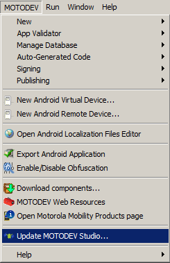

NOTE: This blog post was originally hosted on Motorola's MOTODEV web site. That site was decommissioned in 2012. I've made every attempt to preserve blog posts and accompanying forum posts with their original content. Many web links are no longer valid, so they have been removed and replaced with emphasized text.
by Eric Cloninger (EricC)
Hello Everyone!
This is just a quick post to let you know that we've released MOTODEV Studio 3.0.2 as an update. This update is available by going to the MOTODEV menu and selecting "Update MOTODEV Studio".

This update brings in a several bug fixes to the App Validator that we found as a result of testing with Android SDK version 15. It also brings in the official ADT 15 plugins from Google. If you've already manually integrated ADT 15 yourself, then you are fine with the tools you have, unless you want the bug fixes to the App Validator.
If you are updating from MOTODEV Studio 3.0.0 or earlier, you will want to simultaneously update your Android SDK to version 15. Because the version of ADT that is included with this update is intended to work with SDK version 15, you will start to get compile errors in your projects if you update them out of step with each other.
You might've seen some of my posts on our discussion boards or links to articles at the Android developer site on changes to the tools for Ice Cream Sandwich. If you've been using R.constant values in your projects in switch statements, you will need to spend some time refactoring those into if-else blocks before moving to SDK 15.
Other than the R.constant issue, there should be no major changes to MOTODEV Studio 3.0.0 users with this release. In fact, with the ADT 15 release, it appears that Google has fixed quite a few usability problems that were reported in ADT 14.
Thank you for using MOTODEV Studio!
Eric